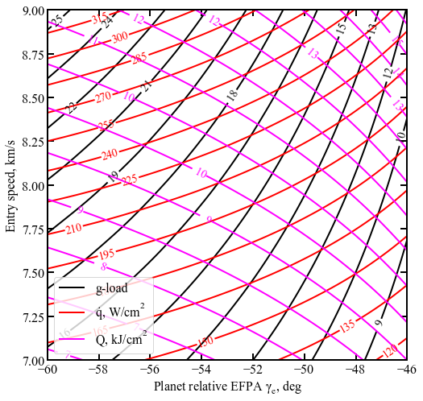

Example - 57 - Dragnofly (Titan) Entry Tradespace - Carpet Plot¶
This example will create an EDL carpet plot showning the trade space for Dragnofly entry vehicle at Titan. Based on work presented in “Preliminary Interplanetary Mission Design and Navigation for the Dragonfly New Frontiers Mission Concept, AAS 18-416”
[1]:
from AMAT.planet import Planet
from AMAT.vehicle import Vehicle
[2]:
import numpy as np
import matplotlib.pyplot as plt
[3]:
# Set up the planet and atmosphere model.
planet=Planet("TITAN")
planet.h_skip = 1270.0E3
planet.h_trap = 0.0E3
planet.loadAtmosphereModel('../atmdata/Titan/titan-gram-avg.dat', 0 , 1 , 2, 3)
[4]:
speedRange = np.linspace(7 , 9, 11)
gammaRange = np.linspace(-60,-46, 11)
acc_net_g_max_array = np.zeros((len(speedRange),len(gammaRange)))
q_stag_total_max_array = np.zeros((len(speedRange),len(gammaRange)))
heatload_max_array = np.zeros((len(speedRange),len(gammaRange)))
dyn_pres_array = np.zeros((len(speedRange),len(gammaRange)))
for i, speed in enumerate(speedRange):
for j, gamma in enumerate(gammaRange):
vehicle=Vehicle('Dragonfly', 1000.0, 140.0, 0.0, np.pi*3.7**2.0*0.25, 0.0, 0.43, planet)
vehicle.setInitialState(1270.0,0.0,0.0,speed,0.0,gamma,0.0,0.0)
vehicle.setSolverParams(1E-6)
vehicle.propogateEntry (120*60,1.0,0.0)
print("G_MAX: "+str("{:.2f}".format(max(vehicle.acc_net_g)))+", Q_MAX: "+str("{:.2f}".format(max(vehicle.q_stag_total)))+", J_MAX: "+str("{:.2f}".format(max(vehicle.heatload/1.0E3)))+", P_MAX: "+str("{:.2f}".format(max(vehicle.dyn_pres_atm))))
acc_net_g_max_array[i,j] = max(vehicle.acc_net_g)
q_stag_total_max_array[i,j] = max(vehicle.q_stag_total)
heatload_max_array[i,j] = max(vehicle.heatload/1.0E3)
dyn_pres_array[i,j] = max(vehicle.dyn_pres_atm)
G_MAX: 16.17, Q_MAX: 158.40, J_MAX: 7.08, P_MAX: 0.22
G_MAX: 15.53, Q_MAX: 155.48, J_MAX: 7.20, P_MAX: 0.21
G_MAX: 14.86, Q_MAX: 152.30, J_MAX: 7.34, P_MAX: 0.20
G_MAX: 14.15, Q_MAX: 148.93, J_MAX: 7.49, P_MAX: 0.19
G_MAX: 13.40, Q_MAX: 145.24, J_MAX: 7.67, P_MAX: 0.18
G_MAX: 12.60, Q_MAX: 141.26, J_MAX: 7.87, P_MAX: 0.17
G_MAX: 11.75, Q_MAX: 136.89, J_MAX: 8.10, P_MAX: 0.16
G_MAX: 10.84, Q_MAX: 132.13, J_MAX: 8.37, P_MAX: 0.15
G_MAX: 9.86, Q_MAX: 126.80, J_MAX: 8.70, P_MAX: 0.13
G_MAX: 8.80, Q_MAX: 120.85, J_MAX: 9.10, P_MAX: 0.12
G_MAX: 7.65, Q_MAX: 114.04, J_MAX: 9.60, P_MAX: 0.10
G_MAX: 17.05, Q_MAX: 171.82, J_MAX: 7.48, P_MAX: 0.23
G_MAX: 16.38, Q_MAX: 168.64, J_MAX: 7.61, P_MAX: 0.22
G_MAX: 15.68, Q_MAX: 165.21, J_MAX: 7.75, P_MAX: 0.21
G_MAX: 14.92, Q_MAX: 161.53, J_MAX: 7.92, P_MAX: 0.20
G_MAX: 14.12, Q_MAX: 157.52, J_MAX: 8.10, P_MAX: 0.19
G_MAX: 13.28, Q_MAX: 153.18, J_MAX: 8.32, P_MAX: 0.18
G_MAX: 12.38, Q_MAX: 148.41, J_MAX: 8.56, P_MAX: 0.17
G_MAX: 11.41, Q_MAX: 143.22, J_MAX: 8.85, P_MAX: 0.15
G_MAX: 10.38, Q_MAX: 137.40, J_MAX: 9.20, P_MAX: 0.14
G_MAX: 9.26, Q_MAX: 130.92, J_MAX: 9.62, P_MAX: 0.13
G_MAX: 8.03, Q_MAX: 123.51, J_MAX: 10.16, P_MAX: 0.11
G_MAX: 17.96, Q_MAX: 185.95, J_MAX: 7.89, P_MAX: 0.24
G_MAX: 17.26, Q_MAX: 182.53, J_MAX: 8.02, P_MAX: 0.23
G_MAX: 16.51, Q_MAX: 178.80, J_MAX: 8.18, P_MAX: 0.22
G_MAX: 15.71, Q_MAX: 174.81, J_MAX: 8.35, P_MAX: 0.21
G_MAX: 14.87, Q_MAX: 170.48, J_MAX: 8.55, P_MAX: 0.20
G_MAX: 13.97, Q_MAX: 165.73, J_MAX: 8.78, P_MAX: 0.19
G_MAX: 13.02, Q_MAX: 160.59, J_MAX: 9.04, P_MAX: 0.18
G_MAX: 12.00, Q_MAX: 154.90, J_MAX: 9.34, P_MAX: 0.16
G_MAX: 10.91, Q_MAX: 148.62, J_MAX: 9.71, P_MAX: 0.15
G_MAX: 9.72, Q_MAX: 141.56, J_MAX: 10.16, P_MAX: 0.13
G_MAX: 8.42, Q_MAX: 133.48, J_MAX: 10.73, P_MAX: 0.11
G_MAX: 18.90, Q_MAX: 200.88, J_MAX: 8.31, P_MAX: 0.26
G_MAX: 18.16, Q_MAX: 197.08, J_MAX: 8.45, P_MAX: 0.25
G_MAX: 17.36, Q_MAX: 193.07, J_MAX: 8.62, P_MAX: 0.24
G_MAX: 16.53, Q_MAX: 188.83, J_MAX: 8.80, P_MAX: 0.22
G_MAX: 15.63, Q_MAX: 184.12, J_MAX: 9.01, P_MAX: 0.21
G_MAX: 14.69, Q_MAX: 178.97, J_MAX: 9.25, P_MAX: 0.20
G_MAX: 13.68, Q_MAX: 173.42, J_MAX: 9.52, P_MAX: 0.19
G_MAX: 12.61, Q_MAX: 167.28, J_MAX: 9.85, P_MAX: 0.17
G_MAX: 11.45, Q_MAX: 160.45, J_MAX: 10.24, P_MAX: 0.16
G_MAX: 10.20, Q_MAX: 152.76, J_MAX: 10.71, P_MAX: 0.14
G_MAX: 8.82, Q_MAX: 144.00, J_MAX: 11.32, P_MAX: 0.12
G_MAX: 19.86, Q_MAX: 216.50, J_MAX: 8.74, P_MAX: 0.27
G_MAX: 19.07, Q_MAX: 212.61, J_MAX: 8.89, P_MAX: 0.26
G_MAX: 18.24, Q_MAX: 208.27, J_MAX: 9.07, P_MAX: 0.25
G_MAX: 17.36, Q_MAX: 203.47, J_MAX: 9.26, P_MAX: 0.24
G_MAX: 16.42, Q_MAX: 198.44, J_MAX: 9.48, P_MAX: 0.22
G_MAX: 15.43, Q_MAX: 192.96, J_MAX: 9.73, P_MAX: 0.21
G_MAX: 14.37, Q_MAX: 186.92, J_MAX: 10.02, P_MAX: 0.19
G_MAX: 13.23, Q_MAX: 180.27, J_MAX: 10.37, P_MAX: 0.18
G_MAX: 12.01, Q_MAX: 172.88, J_MAX: 10.78, P_MAX: 0.16
G_MAX: 10.69, Q_MAX: 164.59, J_MAX: 11.28, P_MAX: 0.14
G_MAX: 9.23, Q_MAX: 155.08, J_MAX: 11.93, P_MAX: 0.13
G_MAX: 20.85, Q_MAX: 233.07, J_MAX: 9.18, P_MAX: 0.28
G_MAX: 20.02, Q_MAX: 228.84, J_MAX: 9.34, P_MAX: 0.27
G_MAX: 19.14, Q_MAX: 224.14, J_MAX: 9.53, P_MAX: 0.26
G_MAX: 18.21, Q_MAX: 219.09, J_MAX: 9.73, P_MAX: 0.25
G_MAX: 17.23, Q_MAX: 213.61, J_MAX: 9.96, P_MAX: 0.23
G_MAX: 16.18, Q_MAX: 207.62, J_MAX: 10.23, P_MAX: 0.22
G_MAX: 15.06, Q_MAX: 201.11, J_MAX: 10.54, P_MAX: 0.20
G_MAX: 13.87, Q_MAX: 193.95, J_MAX: 10.90, P_MAX: 0.19
G_MAX: 12.58, Q_MAX: 185.96, J_MAX: 11.33, P_MAX: 0.17
G_MAX: 11.19, Q_MAX: 176.98, J_MAX: 11.86, P_MAX: 0.15
G_MAX: 9.66, Q_MAX: 166.73, J_MAX: 12.55, P_MAX: 0.13
G_MAX: 21.86, Q_MAX: 250.41, J_MAX: 9.64, P_MAX: 0.30
G_MAX: 20.99, Q_MAX: 245.89, J_MAX: 9.81, P_MAX: 0.28
G_MAX: 20.07, Q_MAX: 240.82, J_MAX: 10.00, P_MAX: 0.27
G_MAX: 19.09, Q_MAX: 235.40, J_MAX: 10.21, P_MAX: 0.26
G_MAX: 18.05, Q_MAX: 229.44, J_MAX: 10.46, P_MAX: 0.24
G_MAX: 16.95, Q_MAX: 223.06, J_MAX: 10.74, P_MAX: 0.23
G_MAX: 15.78, Q_MAX: 216.02, J_MAX: 11.06, P_MAX: 0.21
G_MAX: 14.52, Q_MAX: 208.27, J_MAX: 11.44, P_MAX: 0.20
G_MAX: 13.17, Q_MAX: 199.71, J_MAX: 11.90, P_MAX: 0.18
G_MAX: 11.70, Q_MAX: 190.02, J_MAX: 12.46, P_MAX: 0.16
G_MAX: 10.09, Q_MAX: 178.96, J_MAX: 13.19, P_MAX: 0.14
G_MAX: 22.90, Q_MAX: 268.79, J_MAX: 10.10, P_MAX: 0.31
G_MAX: 21.98, Q_MAX: 263.74, J_MAX: 10.28, P_MAX: 0.30
G_MAX: 21.02, Q_MAX: 258.36, J_MAX: 10.48, P_MAX: 0.28
G_MAX: 19.98, Q_MAX: 252.50, J_MAX: 10.71, P_MAX: 0.27
G_MAX: 18.90, Q_MAX: 246.07, J_MAX: 10.97, P_MAX: 0.26
G_MAX: 17.74, Q_MAX: 239.21, J_MAX: 11.26, P_MAX: 0.24
G_MAX: 16.51, Q_MAX: 231.61, J_MAX: 11.60, P_MAX: 0.22
G_MAX: 15.19, Q_MAX: 223.37, J_MAX: 12.00, P_MAX: 0.21
G_MAX: 13.77, Q_MAX: 214.09, J_MAX: 12.48, P_MAX: 0.19
G_MAX: 12.23, Q_MAX: 203.71, J_MAX: 13.08, P_MAX: 0.17
G_MAX: 10.53, Q_MAX: 191.78, J_MAX: 13.84, P_MAX: 0.14
G_MAX: 23.96, Q_MAX: 287.81, J_MAX: 10.58, P_MAX: 0.32
G_MAX: 23.00, Q_MAX: 282.40, J_MAX: 10.77, P_MAX: 0.31
G_MAX: 21.99, Q_MAX: 276.65, J_MAX: 10.98, P_MAX: 0.30
G_MAX: 20.90, Q_MAX: 270.37, J_MAX: 11.22, P_MAX: 0.28
G_MAX: 19.77, Q_MAX: 263.58, J_MAX: 11.49, P_MAX: 0.27
G_MAX: 18.55, Q_MAX: 256.16, J_MAX: 11.79, P_MAX: 0.25
G_MAX: 17.27, Q_MAX: 248.04, J_MAX: 12.15, P_MAX: 0.23
G_MAX: 15.87, Q_MAX: 239.12, J_MAX: 12.57, P_MAX: 0.22
G_MAX: 14.39, Q_MAX: 229.22, J_MAX: 13.08, P_MAX: 0.19
G_MAX: 12.77, Q_MAX: 218.02, J_MAX: 13.70, P_MAX: 0.17
G_MAX: 10.99, Q_MAX: 205.21, J_MAX: 14.51, P_MAX: 0.15
G_MAX: 25.02, Q_MAX: 307.93, J_MAX: 11.07, P_MAX: 0.34
G_MAX: 24.04, Q_MAX: 302.11, J_MAX: 11.27, P_MAX: 0.33
G_MAX: 22.97, Q_MAX: 295.87, J_MAX: 11.49, P_MAX: 0.31
G_MAX: 21.85, Q_MAX: 289.11, J_MAX: 11.74, P_MAX: 0.30
G_MAX: 20.66, Q_MAX: 281.89, J_MAX: 12.02, P_MAX: 0.28
G_MAX: 19.38, Q_MAX: 273.95, J_MAX: 12.34, P_MAX: 0.26
G_MAX: 18.03, Q_MAX: 265.17, J_MAX: 12.72, P_MAX: 0.24
G_MAX: 16.58, Q_MAX: 255.62, J_MAX: 13.16, P_MAX: 0.22
G_MAX: 15.02, Q_MAX: 245.01, J_MAX: 13.69, P_MAX: 0.20
G_MAX: 13.32, Q_MAX: 233.04, J_MAX: 14.35, P_MAX: 0.18
G_MAX: 11.46, Q_MAX: 219.25, J_MAX: 15.20, P_MAX: 0.16
G_MAX: 26.15, Q_MAX: 328.78, J_MAX: 11.57, P_MAX: 0.35
G_MAX: 25.10, Q_MAX: 322.67, J_MAX: 11.77, P_MAX: 0.34
G_MAX: 23.98, Q_MAX: 315.87, J_MAX: 12.01, P_MAX: 0.32
G_MAX: 22.82, Q_MAX: 308.77, J_MAX: 12.27, P_MAX: 0.31
G_MAX: 21.57, Q_MAX: 300.83, J_MAX: 12.56, P_MAX: 0.29
G_MAX: 20.23, Q_MAX: 292.45, J_MAX: 12.90, P_MAX: 0.27
G_MAX: 18.82, Q_MAX: 283.15, J_MAX: 13.29, P_MAX: 0.25
G_MAX: 17.30, Q_MAX: 272.93, J_MAX: 13.76, P_MAX: 0.23
G_MAX: 15.66, Q_MAX: 261.53, J_MAX: 14.31, P_MAX: 0.21
G_MAX: 13.89, Q_MAX: 248.70, J_MAX: 15.00, P_MAX: 0.19
G_MAX: 11.93, Q_MAX: 233.97, J_MAX: 15.90, P_MAX: 0.16
[5]:
from scipy import interpolate
[6]:
f1 = interpolate.interp2d(speedRange, gammaRange, np.transpose(acc_net_g_max_array), kind='cubic')
q1 = interpolate.interp2d(speedRange, gammaRange, np.transpose(q_stag_total_max_array), kind='cubic')
h1 = interpolate.interp2d(speedRange, gammaRange, np.transpose(heatload_max_array), kind='cubic')
s1 = interpolate.interp2d(speedRange, gammaRange, np.transpose(dyn_pres_array), kind='cubic')
x_new = np.linspace(7,9 , 110)
y_new = np.linspace(-60,-46,110)
g1_new = np.zeros((len(x_new),len(y_new)))
q1_new = np.zeros((len(x_new),len(y_new)))
h1_new = np.zeros((len(x_new),len(y_new)))
s1_new = np.zeros((len(x_new),len(y_new)))
for i in range(0,len(x_new)):
for j in range(0,len(y_new)):
g1_new[i,j] = f1(x_new[i],y_new[j])
q1_new[i,j] = q1(x_new[i],y_new[j])
h1_new[i,j] = h1(x_new[i],y_new[j])
s1_new[i,j] = s1(x_new[i],y_new[j])
X, Y = np.meshgrid(x_new, y_new)
fig = plt.figure()
fig.set_size_inches([8.00,8.00])
plt.ion()
plt.rc('font',family='Times New Roman')
params = {'mathtext.default': 'regular' }
plt.rcParams.update(params)
GCS1 = plt.contour(Y, X, np.transpose(g1_new), levels=15, linewidths=2.0, colors='black')
plt.clabel(GCS1, inline=1, fontsize=14, colors='black',fmt='%3d',inline_spacing=1)
GCS1.collections[0].set_label(r'g-load')
QCS1 = plt.contour(Y, X, np.transpose(q1_new), levels=15, linewidths=2.0, colors='red')
plt.clabel(QCS1, inline=1, fontsize=14, colors='red',fmt='%3d',inline_spacing=1)
QCS1.collections[0].set_label(r'$\dot{q}$'+', '+r'$W/cm^2$')
HCS1 = plt.contour(Y, X, np.transpose(h1_new), levels=15, linewidths=2.0, colors='magenta')
plt.clabel(HCS1, inline=1, fontsize=14, colors='magenta',fmt='%3d',inline_spacing=1)
HCS1.collections[0].set_label(r'$Q$'+', '+r'$kJ/cm^2$')
plt.xlabel("Planet relative EFPA "+r'$\gamma_e$'+r', deg' ,fontsize=16)
plt.ylabel(r'Entry speed, km/s' ,fontsize=16)
plt.xticks(fontsize=16)
plt.yticks(fontsize=16)
ax = plt.gca()
ax.tick_params(direction='in')
ax.yaxis.set_ticks_position('both')
ax.xaxis.set_ticks_position('both')
plt.legend(loc='lower left', fontsize=16, framealpha=0.8)
ax.xaxis.set_tick_params(direction='in', which='both')
ax.yaxis.set_tick_params(direction='in', which='both')
ax.xaxis.set_tick_params(width=2, length=8)
ax.yaxis.set_tick_params(width=2, length=8)
ax.xaxis.set_tick_params(width=1, length=6, which='minor')
ax.yaxis.set_tick_params(width=1, length=6, which='minor')
ax.xaxis.grid(which='major', color='k', linestyle='dotted', linewidth=0.0)
ax.xaxis.grid(which='minor', color='k', linestyle='dotted', linewidth=0.0)
ax.yaxis.grid(which='major', color='k', linestyle='dotted', linewidth=0.0)
ax.yaxis.grid(which='minor', color='k', linestyle='dotted', linewidth=0.0)
for axis in ['top', 'bottom', 'left', 'right']:
ax.spines[axis].set_linewidth(2)
plt.savefig('../plots/dragnofly-sweep.png', dpi=300,bbox_inches='tight')
plt.savefig('../plots/dragnofly-sweep.pdf', dpi=300,bbox_inches='tight')
plt.savefig('../plots/dragnofly-sweep.eps', dpi=300,bbox_inches='tight')
The PostScript backend does not support transparency; partially transparent artists will be rendered opaque.
The PostScript backend does not support transparency; partially transparent artists will be rendered opaque.

Compare the figure to Fig. 11 presented in the paper. The heat rate and heat loads are somewhat off (by a factor of about 2 in some cases) because of the simple models heating correlations used. This is an area which could be improved in future versions of AMAT.